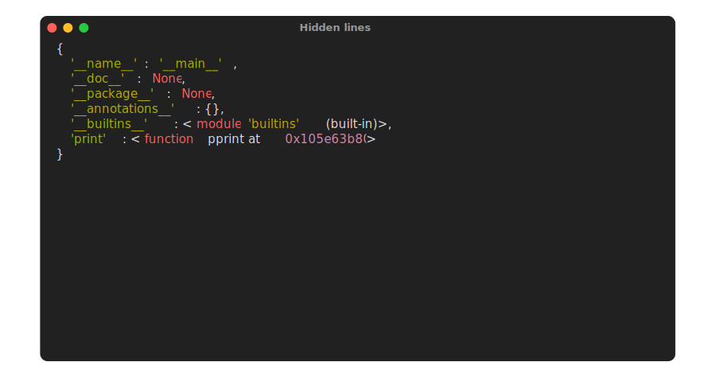
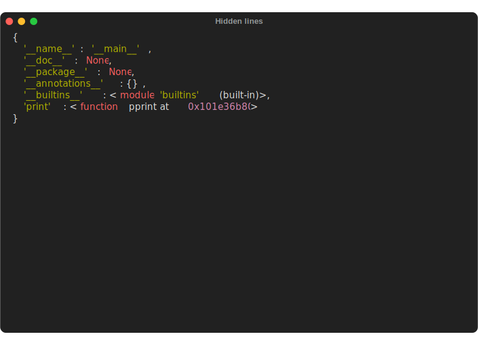

Syntax & options
The format used by the plugin is the following:
```termage option=value ...
{python_code}
```
As all options are read as strings, there are some conversion that are done. Digits are turned into integers, and , delimited strings are turned into tuples.
Using spaces
Strings may include space chars (" ") in them, but the spaces must be escaped:
termage title=My Title
termage title=My\ Title
Info
Currently, options can only be set on a per-block basis. This is subject to change.
Hiding lines
By default, all lines within a termage block will be executed and shown in the Python tab. If you want to execute a line, but not have it show up in the source code, you can prepend it using an ampersand (&):
# We are using the PTG print function, but that's not visible in the output
print(locals())

Include
Includes a file within the codeblock. The file path's "origin" is wherever mkdocs runs from, which is usually the project root.
For example, let's say we have the following structure:
mkdocs.yml
docs/
index.md
src/
intro01.py
intro02.py
To include intro01.py into a Termage block within index.md, you could use:
```termage include=docs/src/intro01.py
print("Code from the original codeblock is retained!")
```
Info
The include option will always "prefix" the actual codeblock's value with whatever is included.
As such, if docs/src/intro01.py had the content:
print("Included text will always preface the real value of a codeblock")
Termage will parse the block as:
```termage <options>
print("Included text will always preface the real value of a codeblock")
print("Code from the original codeblock is retained!")
```
Width & height
Sets the output terminal's dimensions, in characters.


Note
If no dimensions are provided, Termage will use the golden standard (80, 20) dimension tuple.
Foreground & background
Sets the output terminal's default colors.
Foreground will be used for any unstyled text. Background will be used for the titlebar and body of the "window".
Note
Foreground defaults to #DDDDDD, and background defaults to #212121.
Tabs
Sets the text labels of each of the tabs.
Accepts two values, delimited by a single ,. The first value is used for the Python code, and the second is used for the SVG output.
import pytermgui as ptg
with ptg.WindowManager() as manager:
manager.layout.add_slot()
manager.add(ptg.Window("Some window", box="EMPTY"))
import pytermgui as ptg
with ptg.WindowManager() as manager:
manager.layout.add_slot()
manager.add(ptg.Window("Some window", box="EMPTY"))

Title
Sets the title at the top of the output terminal.
Warning
If your title includes a space, make sure to escape it!
For example, instead of title=My title, or title="My title" use title=My\ Title.